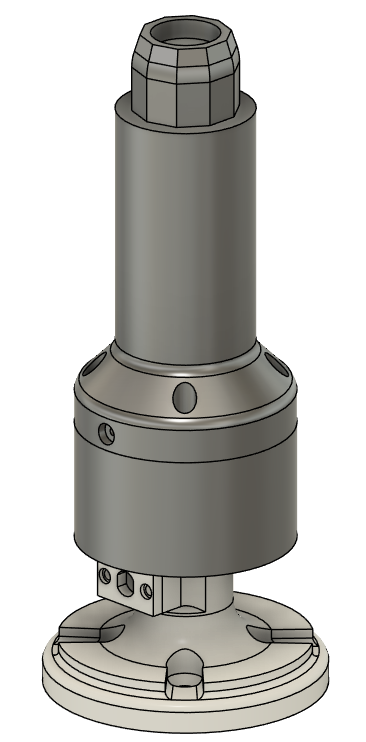
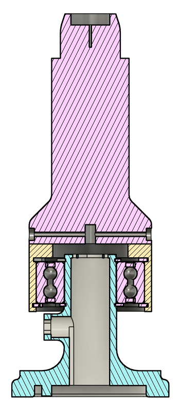
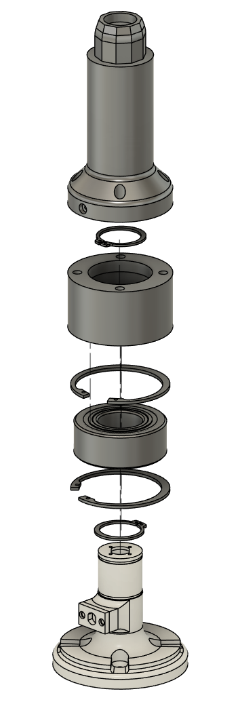

Single-Motor Buffer Shaft Support.
Designing a bearing-supported single-motor buffer assembly to manage radial loading at the tool while keeping the package compact, serviceable, and manufacturable.
Goal
Create a single-motor buffer assembly that supports the tool against side loading without relying on the motor shaft alone to carry radial force.
How I approached it
Built the assembly in Fusion 360, added a large rolling-element bearing with retaining-ring capture, and used section and exploded views to validate the load path and assembly order.
Result / status
The concept is more complete in CAD, with assembled, sectioned, and exploded documentation plus an animation. Physical prototyping and validation are the next steps.


Original CAD screenshots from the current design. Select an image to inspect it at full size.
Explore the full project gallery ↓Support the tool, not just the motor shaft.
This project focuses on a single-motor buffer concept for a robotic cleaning tool. Because the rotating pad or buffer will contact a surface with a sideways force, the design needs a shaft support arrangement that can handle radial loading without putting that entire bending load directly into the motor output.
Balance support, retention, and serviceability.
The assembly needs to transmit torque, carry lateral load through a bearing-supported structure, and stay positively retained in the axial direction. At the same time, it has to remain compact enough for the robot end effector and practical to assemble with real retaining features, fasteners, and service access.
Use CAD views to verify the mechanical stack-up.
- 01
Modeled the base, upper housing, central shaft geometry, and top interface in Fusion 360 to establish the overall packaging of the tool.
- 02
Integrated a large bearing between the rotating and stationary components, then added retaining-ring features to capture the bearing stack and control axial location.
- 03
Created section views to inspect the internal relationships between the housing, shaft, bearing, and retainers, making sure the load path and part interfaces were reasonable.
- 04
Built an exploded view and animation to check assembly order and clearly communicate how the parts come together.
A more complete concept, ready for the next validation step.
The assembled, sectioned, and exploded CAD views show a substantially developed concept rather than just a rough placeholder. At this stage, the value is in the documented architecture and the fact that the assembly sequence and retention strategy have been thought through. The remaining work is to prototype the design and confirm how it performs under real contact loads.
Exploded and section views reveal what simple renders hide.
For bearing-supported mechanisms, it is not enough for the outside shape to look correct. Section and exploded views help verify whether the part stack-up, retention strategy, and assembly process are realistic before any hardware is made.
What I would validate next
Next: prototype the assembly, confirm bearing fit and axial retention in hardware, and test how well the tool resists side loading during surface contact.
Concept development in CAD.
The current documentation shows the concept from multiple views, including an exploded animation for communicating assembly order.
